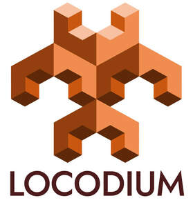

Trade Mark Journal No.2025/027 4 July 2025
UK00004222084 20 June 2025 (9,42)

- Class 9
- Application development software; Software for product development; Application software for cloud computing services; Application software; Platform software; Business application software; Development environment software; Enterprise application software [EAS]; Web application software; Computer software for application and database integration; Computer software for use as an application programming interface (API); Development tool programs; Application server software; Software development programs; Collaboration management software platforms; Web application and server software.
- Class 42
- Database development services; Development services relating to computer software application solutions; Application service provider services; Software development services; Development of computer software application solutions; Application service provider [ASP] services; Software development, programming and implementation; Design, development and implementation of software; Application service provider (ASP); Platform as a Service [PaaS]; Platform as a service [PaaS]; Software as a service; Design and development of software for database management; Design and development of data processing software; Design and development of data retrieval software; Design and development of data processing programs; Design and development of data entry systems; Development of computer platforms; Database design and development; Rental of application software; Platforms for artificial intelligence as software as a service [SaaS]; Design and development of data processing systems; Design and development of software for inventory management; Development and testing of software; Software design and development; Development, updating and maintenance of software and database systems; Design and development of data storage systems; Software development; Development of software; Development and maintenance of computer database software; Design and development of electronic database software; Design and development of image processing software; Computer system design and development; Design and testing for new product development; Hosting services, software as a service, and rental of software; Software as a service [SaaS] featuring software for deep learning; Design, maintenance, development and updating of computer software; Software as a service [SaaS] featuring computer software platforms for artificial intelligence; Product design and development; Development and maintenance of computer software; Design and development of computer database software; Design and development of databases; Design and development of computer software for process control; Design and development of computer software for supply chain management; Development services relating to data processing systems; Software as a service [SaaS] services featuring software for machine learning, deep learning and deep neural networks; Software as a service [SAAS] services; Computer system integration services; Development services in the field of computer software and advisory services relating thereto; Product development; Consultancy and information services in the field of computer system integration; Design and development of computer software for evaluation and calculation of data; Consultancy and information services relating to the design, programming and maintenance of computer software; Design services relating to the development of computerised information processing systems; Evaluation of product development; Consultancy relating to the design and development of computer database programs.
JFDI Consulting Ltd